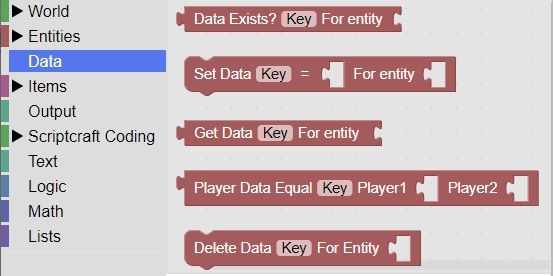

<H2>Entity Data</H2>
<H3>Overview</h3>
Entity data is that can be associated with a particular entity or player in the game<br>
You can use this data to remember a state for a player such as how much ammo they have remaining.<br>
It is located in the Data section: <br>
<br>


   